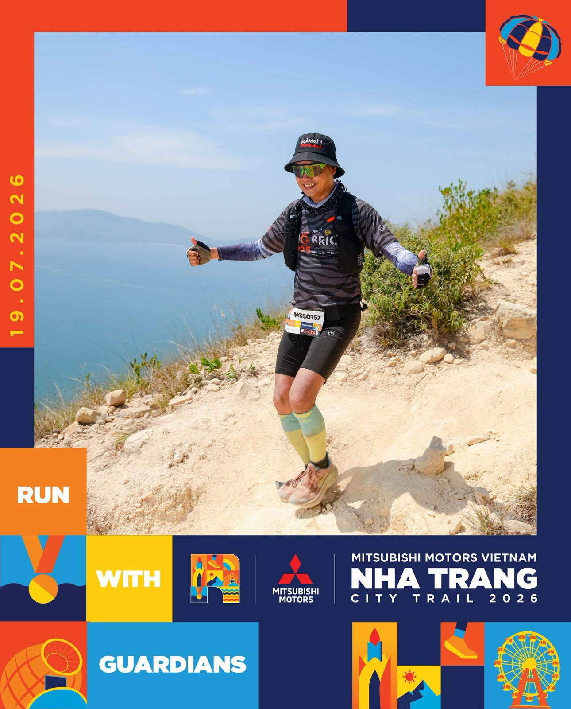
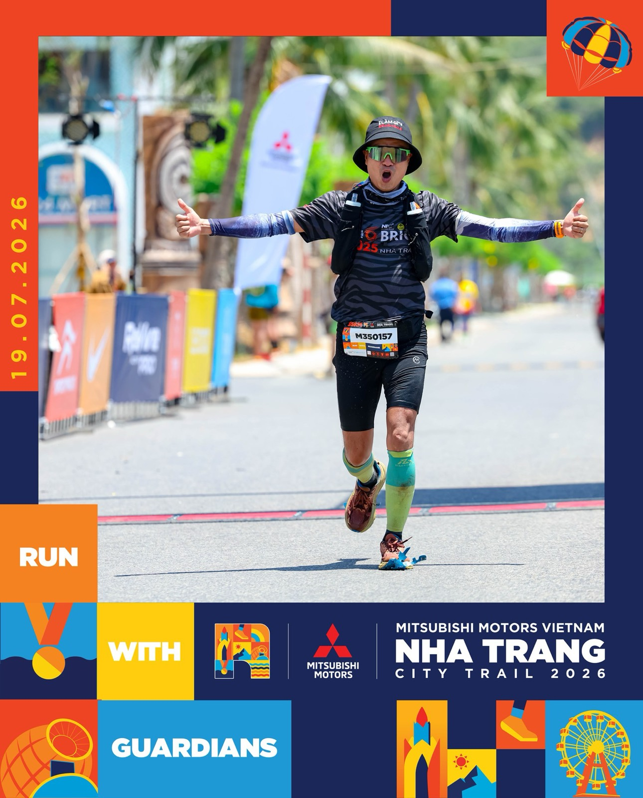

35km trail đầu đời ở tuổi 37 — và thói quen đi tìm "lần đầu"
Người ta hay nghĩ đến một độ tuổi nào đó thì đời mình đã "đủ khuôn": nghề đã chọn, nhà đã ở, thói quen đã đóng khung — những "lần đầu tiên" là chuyện của tuổi hai mươi.

Tấm ảnh này chính tôi chụp — trong một "lần đầu" mà bài viết sẽ kể. (Đèo Lương Sơn, 5h sáng 24/07/2026)
Tôi 37 tuổi, và tôi nghĩ ngược lại. Tuần vừa rồi là bằng chứng: trong đúng năm ngày, tôi có hai lần đầu tiên — một lần trên núi, một lần lúc 3 giờ sáng.
Lần đầu thứ nhất: 35km đường núi, ngày 19/7
Tôi chạy bộ nhiều năm nay cùng anh em Nha Trang Runner — nhiều giải full marathon, rồi Ironman 70.3 Đà Nẵng 2025. Nghe vậy ai cũng tưởng 35km là chuyện nhỏ.
Không hề. Marathon là đường bằng, nhịp đều, tính toán được. Còn trail — đường núi, dốc lên dốc xuống, chân đặt xuống mỗi bước một khác — là một môn hoàn toàn lạ với tôi. Đăng ký City Trail Nha Trang cự ly 35km, tôi biết mình đang bước vào vùng mình chưa từng đi.
Ngày 19/7/2026, tôi qua vạch đích cự ly trail đầu tiên trong đời.


Điều tôi nhớ nhất không phải tấm huy chương. Là buổi sáng hôm sau: cơ thể mệt rã, nhưng đồng hồ sinh học vẫn kéo tôi dậy sớm, ngồi vào bàn nghĩ tiếp kế hoạch tuần. Lúc đó tôi hiểu — thứ mình rèn được qua mỗi giải chạy không phải đôi chân, mà là cái nếp không cho phép mình rời cuộc chơi.
Lần đầu thứ hai: 3 giờ sáng trên đèo, ngày 24/7
Năm ngày sau, tôi lại có một "lần đầu" khác — chẳng liên quan gì đến thể thao.
Hơn 3 giờ sáng, tôi dậy đi cùng hai người anh trong giới nhiếp ảnh lên đèo Lương Sơn để săn mặt trời — lần đầu tiên trong đời tôi cầm máy học chụp một khung hình tử tế: tiền cảnh, trung cảnh, hậu cảnh. Tấm ảnh bình minh đầu bài chính là thành quả của buổi sáng đó.
Đứng trên đèo lúc trời chuyển từ đen sang đỏ rồi sang vàng, tôi buột miệng nói một câu mà giờ tôi vẫn giữ:
Khi đam mê cái gì, mình nhìn mọi thứ đều rất tuyệt đẹp.
Hai lần đầu trong một tuần — một lần vắt kiệt cơ thể, một lần đánh thức con mắt. Cả hai đều cho tôi cùng một thứ: cảm giác mình còn mới.
Vì sao tôi "sưu tầm" những lần đầu
Nói thật lòng: tôi từng có giai đoạn không muốn thử gì mới cả. Sau cú vấp ngã đầu tư 2021–2022, thứ duy nhất tôi muốn là an toàn. Chính thể thao — bắt đầu từ chiếc xe đạp thi Ironman đầu tiên, món quà của một người anh quý mến — kéo tôi ra khỏi vùng co cụm đó. Vận động không chỉ để khỏe; nó giúp tôi giữ tinh thần tích cực qua đúng những giai đoạn áp lực nhất.
Từ đó tôi nhận ra một quy luật đơn giản: người ta không cũ đi vì tuổi. Người ta cũ đi khi ngừng có lần đầu tiên.
Nghề của tôi cũng vậy. Ở tuổi 37 tôi vẫn đang học những thứ lần đầu — học dùng AI cho công việc (tôi theo học thầy Nhật Lê ngay tại Nha Trang, từ khóa AI Tinh Gọn đến Master AI), học chụp ảnh để tự làm nội dung, học một thị trường mới từ anh em thổ địa. Mỗi lần đầu đều lóng ngóng như nhau, và đều đáng như nhau.
Còn lộ trình chạy 2026 tôi tự đặt cho mình thì đang đi đúng nhịp: ✅ full marathon Tiền Phong, ✅ 35km trail này; tháng 8 tới là full marathon VnExpress ngay tại Nha Trang; và chốt năm bằng 55km trail ở Lâm Đồng tháng 11 — dài hơn, dốc hơn, lạnh hơn. Về đích chặng đó là tròn lộ trình năm. Viết ra đây coi như cam kết công khai, để khỏi có đường lùi.
Nếu bạn đang thấy mình "đủ khuôn"
Thử một việc thôi: tháng này, làm MỘT thứ bạn chưa từng làm. Không cần 35km. Một cung đường chưa đi, một môn chưa thử, một kỹ năng lóng ngóng. Nhỏ cũng được — miễn là "lần đầu".
Rồi để ý cảm giác buổi sáng hôm sau. Tôi tin bạn sẽ hiểu điều tôi đang nói.
"Rồi, ngày mới tốt lành nhé."
Sống tử tế · Kiếm tiền hạnh phúc · Cho đi giá trị
Muốn xem hành trình những "lần đầu" của tôi?
Tôi kể chuyện chạy, chuyện nghề, chuyện học cái mới mỗi ngày trên Facebook.
Theo dõi trên Facebook